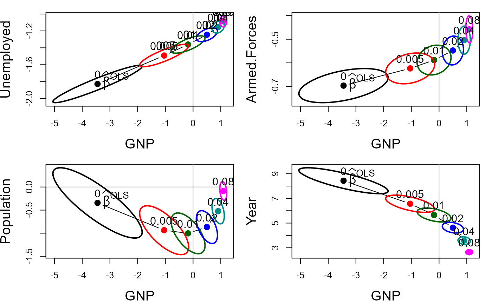
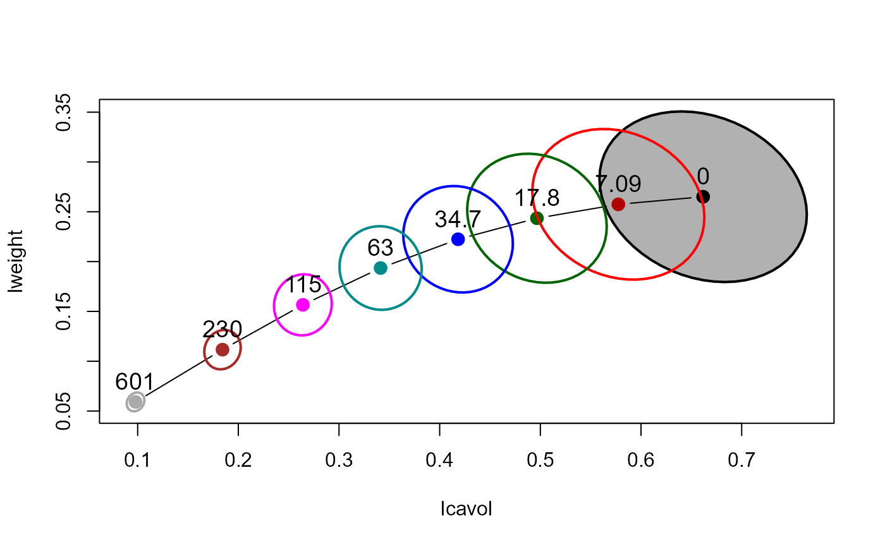
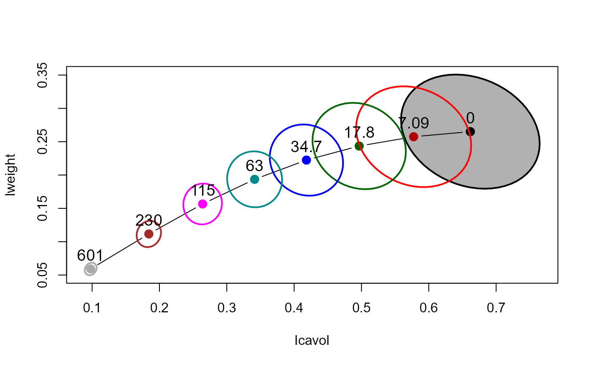

The bivariate ridge trace plot displays 2D projections of the covariance ellipsoids for a set of ridge regression estimates indexed by a ridge tuning constant.
The centers of these ellipses show the bias induced for each parameter, and also how the change in the ridge estimate for one parameter is related to changes for other parameters.
The size and shapes of the covariance ellipses show directly the effect on precision of the estimates as a function of the ridge tuning constant.
plot.pcaridge does these bivariate ridge trace plots for "pcaridge" objects, defaulting to plotting the
two smallest components.
Usage
# S3 method for class 'ridge'
plot(
x,
variables = 1:2,
radius = 1,
which.lambda = 1:length(x$lambda),
labels = lambda,
pos = 3,
cex = 1.2,
lwd = 2,
lty = 1,
xlim,
ylim,
col = c("black", "red", "darkgreen", "blue", "darkcyan", "magenta", "brown",
"darkgray"),
center.pch = 16,
center.cex = 1.5,
fill = FALSE,
fill.alpha = 0.3,
ref = TRUE,
ref.col = gray(0.7),
...
)
# S3 method for class 'pcaridge'
plot(x, variables = (p - 1):p, labels = NULL, ...)Arguments
- x
A
ridgeobject, as fit byridge- variables
Predictors in the model to be displayed in the plot: an integer or character vector of length 2, giving the indices or names of the variables. Defaults to the first two predictors for
ridgeobjects or the last two dimensions forpcaridgeobjects.- radius
Radius of the ellipse-generating circle for the covariance ellipsoids. The default,
radius=1gives a standard “unit” ellipsoid. Typically, valuesradius<1gives less cluttered displays.- which.lambda
A vector of indices used to select the values of
lambdafor which ellipses are plotted. The default is to plot ellipses for all values oflambdain theridgeobject.- labels
A vector of character strings or expressions used as labels for the ellipses. Use
labels=NULLto suppress these.- pos, cex
Scalars or vectors of positions (relative to the ellipse centers) and character size used to label the ellipses
- lwd, lty
Line width and line type for the covariance ellipsoids. Recycled as necessary.
- xlim, ylim
X, Y limits for the plot, each a vector of length 2. If missing, the range of the covariance ellipsoids is used.
- col
A numeric or character vector giving the colors used to plot the covariance ellipsoids. Recycled as necessary.
- center.pch
Plotting character used to show the bivariate ridge estimates. Recycled as necessary.
- center.cex
Size of the plotting character for the bivariate ridge estimates
- fill
Logical vector: Should the covariance ellipsoids be filled? Recycled as necessary.
- fill.alpha
Numeric vector: alpha transparency value(s) in the range (0, 1) for filled ellipsoids. Recycled as necessary.
- ref
Logical: whether to draw horizontal and vertical reference lines at 0.
- ref.col
Color of reference lines.
- ...
Other arguments passed down to
plot.default, e.g.,xlab,ylab, and other graphic parameters.
References
Friendly, M. (2013). The Generalized Ridge Trace Plot: Visualizing Bias and Precision. Journal of Computational and Graphical Statistics, 22(1), 50-68, doi:10.1080/10618600.2012.681237, https://www.datavis.ca/papers/genridge-jcgs.pdf
See also
ridge for details on ridge regression as implemented
here; pairs.ridge, traceplot, for basic plots.
pca.ridge for transformation of ridge regression estimates to PCA space.
biplot.pcaridge and plot3d.ridge for other
plotting methods
Examples
longley.y <- longley[, "Employed"]
longley.X <- data.matrix(longley[, c(2:6,1)])
lambda <- c(0, 0.005, 0.01, 0.02, 0.04, 0.08)
lambdaf <- c("", ".005", ".01", ".02", ".04", ".08")
lridge <- ridge(longley.y, longley.X, lambda=lambda)
op <- par(mfrow=c(2,2), mar=c(4, 4, 1, 1)+ 0.1)
for (i in 2:5) {
plot(lridge, variables=c(1,i), radius=0.5, cex.lab=1.5)
text(lridge$coef[1,1], lridge$coef[1,i], expression(~widehat(beta)^OLS),
cex=1.5, pos=4, offset=.1)
if (i==2) text(lridge$coef[-1,1:2], lambdaf[-1], pos=3, cex=1.25)
}

par(op)
data(prostate)
py <- prostate[, "lpsa"]
pX <- data.matrix(prostate[, 1:8])
pridge <- ridge(py, pX, df=8:1)
plot(pridge)
 plot(pridge, fill=c(TRUE, rep(FALSE,7)))

plot(pridge, fill=c(TRUE, rep(FALSE,7)))
